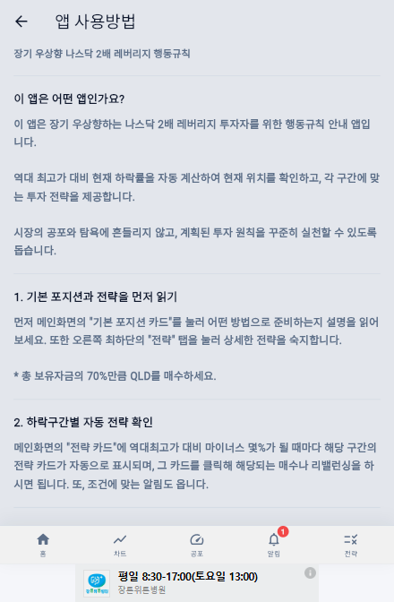
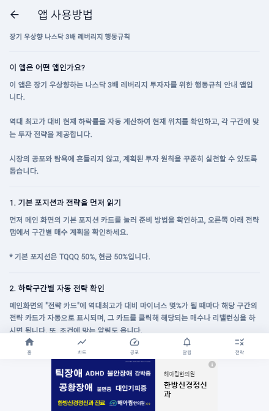
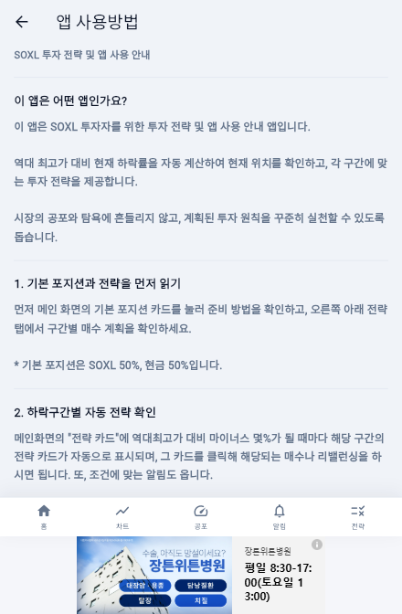
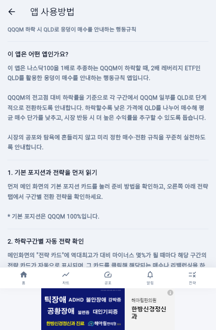

QLD
QLD Alert PC
QLD 전용 Windows 앱
QLD 설치 파일 다운로드Windows 10/11 · 64비트 · 115.7 MB파일 검증 SHA-256
a69a732b33a7e85b783e094971eda24c5a04d9d55f1ea292533b0e736b30b0d0QLD · TQQQ · SOXL · QQQM을 각각 설치하는 독립형 앱입니다. 메신저처럼 가볍게 띄우고, 필요한 앱을 여러 개 동시에 사용할 수 있습니다.
QLD 전용 Windows 앱
QLD 설치 파일 다운로드Windows 10/11 · 64비트 · 115.7 MBa69a732b33a7e85b783e094971eda24c5a04d9d55f1ea292533b0e736b30b0d0TQQQ 전용 Windows 앱
TQQQ 설치 파일 다운로드Windows 10/11 · 64비트 · 115.7 MB799fdf12e572b74ff03c17722eeaaf5a46d0f55918bd6a51d62ca4540eea349fSOXL 전용 Windows 앱
SOXL 설치 파일 다운로드Windows 10/11 · 64비트 · 115.7 MB309fc7759685e63e89f248ebfa93b6d6eab7e6f5f1580aa1047badd2b9f9575bQQQM 전용 Windows 앱
QQQM 설치 파일 다운로드Windows 10/11 · 64비트 · 115.7 MBcdb30b28a6f1ec2aca47381edc54c723b5e2ae3279dc2a411651fb2f9e135155버전 1.2.0 · 빌드 5 · 2026-10-28
기본 창 440×760, 화면 배율 85%. 작은 화면에서는 창 높이가 자동으로 맞춰집니다. 종목 전환 탭 없이 해당 앱만 열리며, 앱별 설정과 저장 공간이 분리됩니다.
항상 위 표시 · 밝기와 창 불투명도 조절 · 트레이 보관 · 작은 창 모드를 지원합니다. 인터넷 연결이 필요합니다. 기존 통합 앱의 기록은 별도로 유지됩니다.
설치 파일은 코드 서명이 없습니다. 투자 참고용 정보이며 수익을 보장하지 않습니다.



